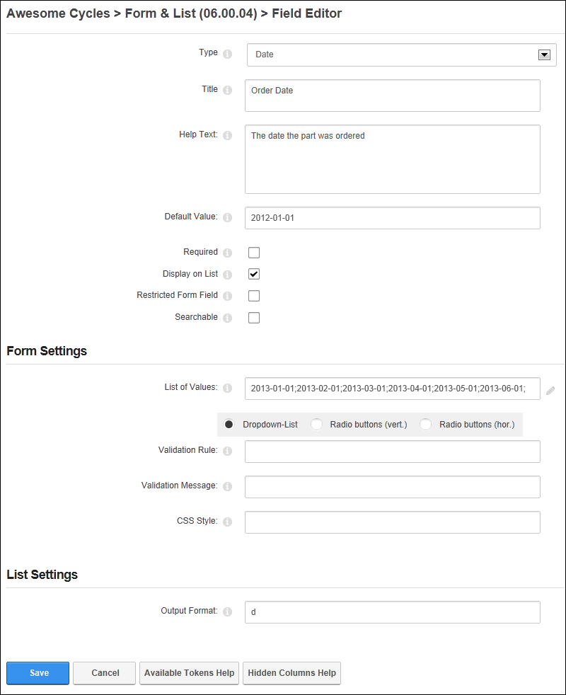
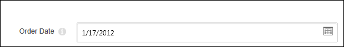
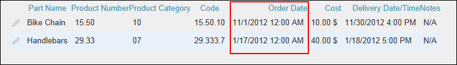

Adding a Date Field
How to add a date field to a form or list using the Form and List module. The date and time field allows form or list editors to select a date using the Calendar control. The selected date is then displayed in the list. This tutorial assumes you are currently adding a date column to a form or list (See "Creating a Form or List") or editing an existing date record. See "Editing List or Form Columns"
Note 1: Both the "Default Value" and "List of Values" fields must be left blank to display the current month/day on the Date Picker.
Note 2: Any of the below date formats are also acceptable, however the Calendar Control is recommended to avoid confusion:
- 12 February 2004
- 12 Feb 2004
- Feb 12 2004
- Feb 12, 2004
- 2/12/2004
- In the Title text box, enter a title that will be displayed on the form or list for this field.
- In the Help Text text box, enter a help message to assist users who are adding or editing the data for this field.
- In the Default Value text box, enter the default date to be displayed for this field. E.g. 2013-01-01 - OR - Leave blank to display the date field as empty. Note: The Date Picker control will be displayed for both these options, allowing any date to be selected.
- At Required, if this field must be completed to submit the form or add a record to a list - OR - if this field as optional. This is the default setting.
- At Display on List, if this column is visible on the list in the normal grid view. This is the default setting. - OR - to set the field as visible to Administrators only.
- At Restricted Form Field, check
 the check if this column is only visible to users/roles who have been added to the "Edit Also Restricted Columns" permission (See "Setting Form Permissions") - OR - if the column is visible to all users. This is the default setting.
the check if this column is only visible to users/roles who have been added to the "Edit Also Restricted Columns" permission (See "Setting Form Permissions") - OR - if the column is visible to all users. This is the default setting.
- At Searchable, if this column searchable using the Search Options configured for this module. This setting has no influence whether the field gets indexed for the side wide search - OR - if the column is not included in the module search. This is the default setting.
- Go to the Form Settings section.
- In the List of Values choose one of the following options:
- Leave the field blank to display the Date Picker control. The Date Picker will open on the month/day set in the "Default Value" field or if that field is blank it will open to the current month/day. This is the default option for this setting.
- Enter a list of dates that can be selected from a drop down list (E.g. 2012-01-01;2012-02-01;2012-03-01) and then select how the list options are displayed. Note: This setting removes the user's ability to enter other values.
- Dropdown-List: Display values in a drop down selection list. This is useful when there are a lot of values.
- Radio Buttons (Vert.: Display values in a vertical list with radio buttons.
- Radio Buttons (Hor.): Display values in a horizontal list with radio buttons
- In the Validation Rule text box, enter the required input pattern using the "Regular Expression" language. See MSDN Library for more on expressions.
- In the Validation Message text box, enter the message to be displayed if the value entered is incorrect for the validation rule.
- In the CSS Style text box, enter the style to be applied on the text box or list control in the form or list.
- Go to the List Settings section.
- In the Output Format text box, leave blank to display short dates (E.g. 2/21/2013) - OR - Enter one of the following options to set the date format:
- d: Enter to display a short date. E.g. 2/21/2013
- D: Enter to display a long date. E.g. Thursday, February 21, 2013
- M: Enter to display the month and day. E.g. February 21
- Y: Enter to display year and month. E.g. February, 2013
- Click the Save button to save the field and return to the Form & List Configuration page.

Adding/Editing a Date field

Setting a date field on a form or list

The Date field displayed in a List